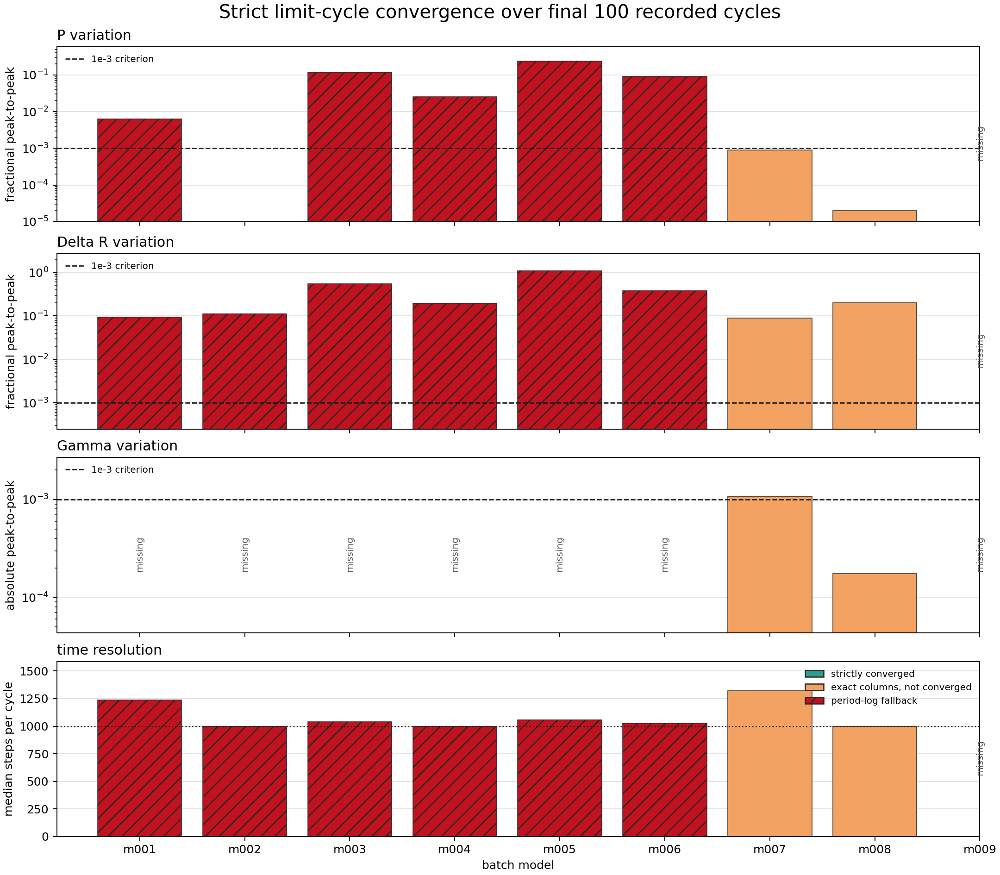
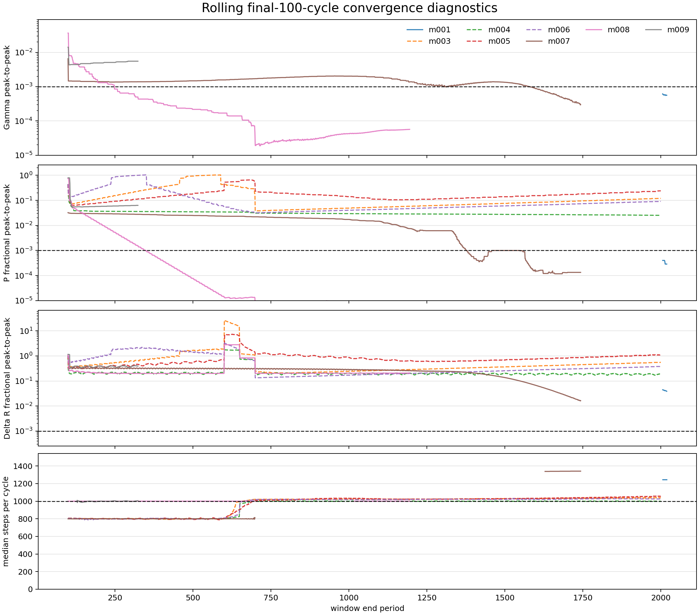
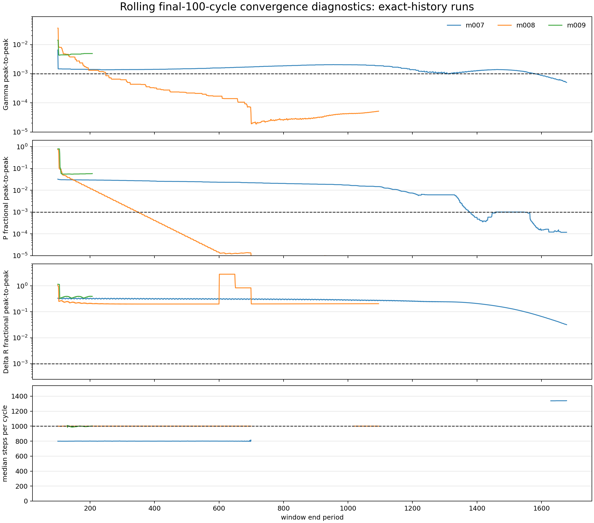
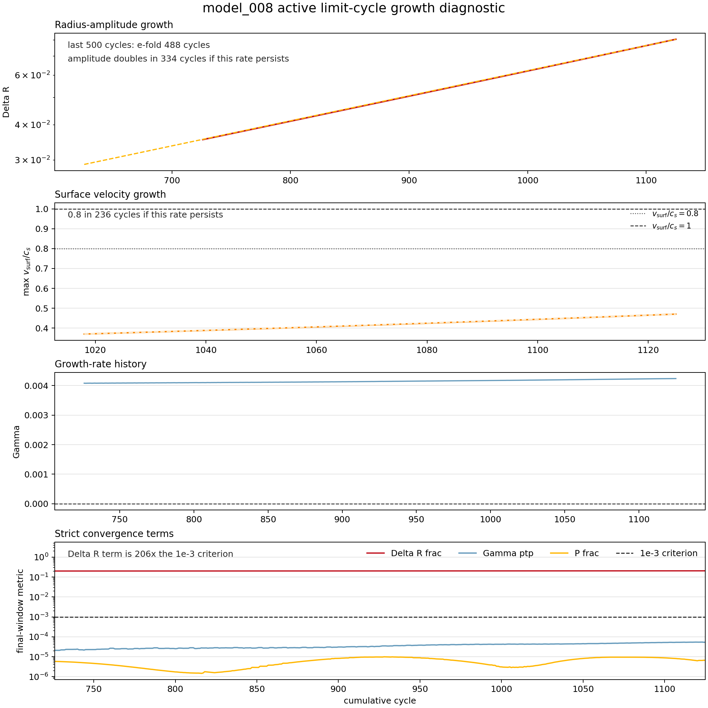

{kind=link}
model_000
model_000_combined_14507_full_pressure_minus_eq

M=0.7737 M_sun Teff=6332.6 K L=58.67 L_sun Z=2.091e-05
3184 profiles | 17.0 MB GIF
RR Lyrae RSP animations for following pressure-volume work, gas heating, ionization structure, radius, temperature, luminosity, and radial velocity through pulsation phase.




DeltaR window 203x criterion | amplitude doubles in 339 cycles | max vsurf/cs 0.286 | vsurf/cs=0.8 in 481 cycles
model_000_combined_14507_full_pressure_minus_eq
M=0.7737 M_sun Teff=6332.6 K L=58.67 L_sun Z=2.091e-05
3184 profiles | 17.0 MB GIF
model_001_M0p5602_Z0p003592_T6824
M=0.5602 M_sun Teff=6824 K L=51.51 L_sun Z=0.003592
3728 profiles | max v_surf/c_s 4.38 (supersonic) | strict convergence pending | period_log_fallback | 2508 cycles | Gamma not recorded | P frac 0.00629 | DeltaR frac 0.0938
model_002_M0p5753_Z0p00707_T6044
M=0.5753 M_sun Teff=6044 K L=36.22 L_sun Z=0.00707
3000 profiles | max v_surf/c_s 0.286 (ok) | strict convergence pending | period_log_fallback | 2599 cycles | Gamma not recorded | P frac 0 | DeltaR frac 0.111
model_003_M0p7317_Z0p001405_T6745
M=0.7317 M_sun Teff=6745 K L=50.21 L_sun Z=0.001405
3004 profiles | max v_surf/c_s 3.28 (supersonic) | strict convergence pending | period_log_fallback | 2599 cycles | Gamma not recorded | P frac 0.12 | DeltaR frac 0.554 | luminosity_lsun phase seam is 0.05168 of amplitude, expected <= 0.025; radius_rsun phase seam is 0.05676 of amplitude, expected <= 0.025
model_004_M0p7595_Z0p0001834_T6876
M=0.7595 M_sun Teff=6876 K L=60.04 L_sun Z=0.0001834
3008 profiles | max v_surf/c_s 0.636 (watch) | strict convergence pending | period_log_fallback | 2599 cycles | Gamma not recorded | P frac 0.0252 | DeltaR frac 0.195
model_005_M0p6238_Z0p00007156_T6925
M=0.6238 M_sun Teff=6925 K L=48.84 L_sun Z=7.156e-05
2995 profiles | max v_surf/c_s 1.87 (supersonic) | strict convergence pending | period_log_fallback | 2599 cycles | Gamma not recorded | P frac 0.238 | DeltaR frac 1.08 | radius_rsun phase seam is 0.3245 of amplitude, expected <= 0.025; teff_k phase seam is 0.1056 of amplitude, expected <= 0.025
model_006_M0p7194_Z0p001620_T6711
M=0.7194 M_sun Teff=6711 K L=51.9 L_sun Z=0.00162
3097 profiles | max v_surf/c_s 2.54 (supersonic) | strict convergence pending | period_log_fallback | 2599 cycles | Gamma not recorded | P frac 0.0913 | DeltaR frac 0.378 | luminosity_lsun phase seam is 0.05396 of amplitude, expected <= 0.025; radius_rsun phase seam is 0.08457 of amplitude, expected <= 0.025
model_007_M0p6887_Z0p004060_T6669
M=0.6887 M_sun Teff=6669 K L=50.79 L_sun Z=0.00406
max v_surf/c_s 4.73 (supersonic) | strict convergence pending | history_exact_rsp_columns | 1564 cycles | Gamma ptp 0.00107 | P frac 0.00089 | DeltaR frac 0.0892
awaiting render
model_008_M0p6151_Z0p0004406_T6792
M=0.6151 M_sun Teff=6792 K L=60.65 L_sun Z=0.0004406
period 902 / 5000 | max v_surf/c_s 0.287 (ok) | 1000 steps/cycle | strict convergence pending | history_exact_rsp_columns | 1501 cycles | Gamma ptp 3.1e-05 | P frac 8.38e-06 | DeltaR frac 0.203 | window max v_surf/c_s 0.286
awaiting render
model_009_M0p6668_Z0p0001120_T6852
M=0.6668 M_sun Teff=6852 K L=51.19 L_sun Z=0.000112
period 2 / 600 | model 3170 | max v_surf/c_s 0.0228 (ok) | 1376 steps/cycle | strict convergence pending | history_exact_rsp_columns | 2 cycles | 2/100-cycle window
awaiting render
{kind=link}